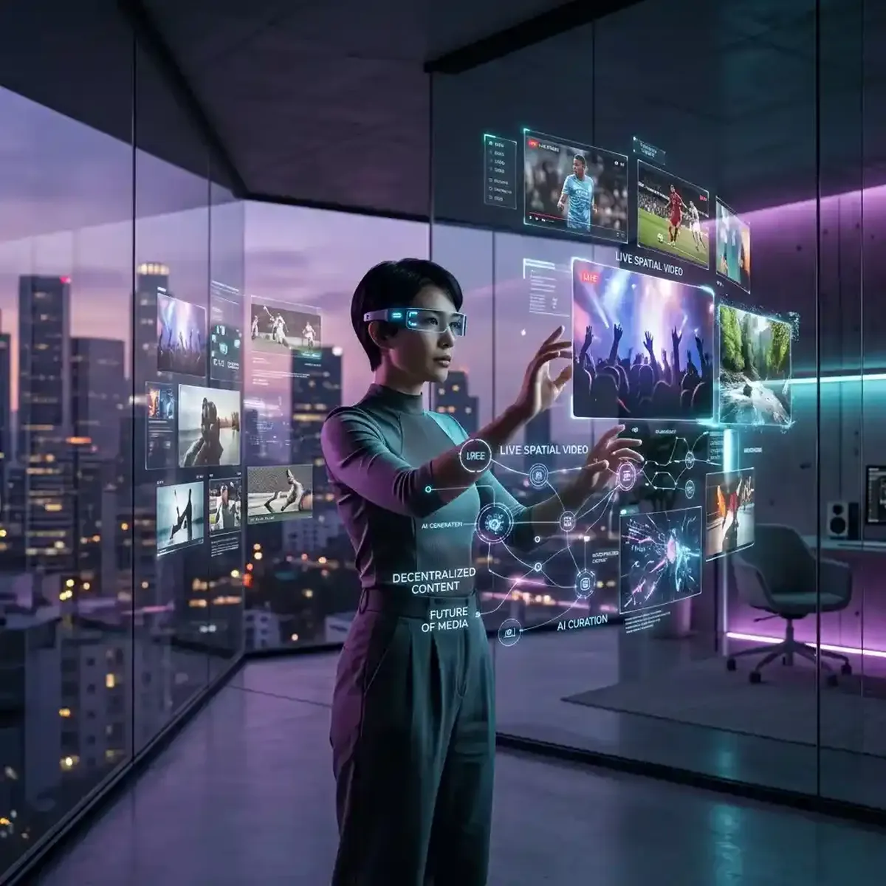

The Future of Online Video: What to Expect in the Next 5 Years

In today's fast-paced digital landscape, the concept of "Video" has transitioned from a fixed rectangular frame into a multi-dimensional, decentralized, and hyper-personalized "Experience."
We are standing at the threshold of a visual revolution that will redefine how we perceive information, identity, and community. The traditional model of "mass-broadcasting" is being replaced by a "Synthetic-Storytelling" era where every viewer is an active participant in an immersive narrative. Built on the foundations of Web3, Extended Reality (XR), and high-performance AI, the future of video is no longer just about the screen you hold; it’s about the digital reality you inhabit. For the data-driven professional and the forward-thinking creator, understanding these emerging trends is the key to efficient multitasking in a volatile world. This guide explores the future horizon and examines how you can prepare for the total visual dominance of 2027 and beyond. Success today is about the foresight of your participation.
Immersive Realities (XR/AR): Beyond the Traditional Frame
The biggest shift in the 2026 visual world is the "Death of the Frame." We are moving toward a world of "Immersive Realities" where video content is no longer confined to a screen but is spatially mapped in the 360-degree environment around the user. Extended Reality (XR) and Augmented Reality (AR) glasses have become the primary consumption devices for high-value intelligence. Imagine a professional dashboard (perhaps using a future version of YoutubeMulti) that isn't pinned to a monitor but is "Spatialized"—with dozens of live data tiles floating around your tactical home-office, responding to your gestures and eye-movements in real-time.
To succeed in this future environment, creators must move toward "Volumetric Design." Content must be produced not just for a 2D viewport, but for a 3-dimensional space. This requires a new kind of "Narrative Depth." Whether you are creating a tactical guide for the Polish market or a technical analysis of high-bitrate streaming, the ability to provide "Immersive Data Overlays" will be the ultimate differentiator. The "passive viewer" has been replaced by the "Active Explorer," and successful brands are those who build "Digital Destination Spaces" rather than just uploading video files. The future of video is a world of total presence.
Decentralized Distribution: The Rise of Content Ownership on the Blockchain
While centralized platforms still dominate the traffic charts today, the "Power Dynamic" is shifting toward "Decentralized Distribution." Built on blockchain technology, new platforms are allowing creators to truly "own" their content and their relationship with the audience. This move toward "Web3 Video" is solving the historical problems of arbitrary censorship, opaque monetization, and algorithmic shadow-banning. In a decentralized world, the creator is the platform.
This has massive implications for "Situational Awareness." In a decentralized ecosystem, information breaks across thousands of independent nodes rather than a single regulated feed. To capture the "Ground-Level Veracity" of a global event, a monitor must be able to aggregate signals from across this decentralized landscape. A multi-stream system allowing you to monitor "Traditional News" side-by-side with "Decentralized Intel-Nodes" is an essential tool for the modern analyst. For instance, seeing how the "On-Chain Community" reacts to a sudden bank interest rate decision while simultaneously monitoring the "Legacy Media" reaction provides a direct window into the likely market direction. Total multitasking efficiency is the result of focused, platform-agnostic monitoring.
Collaborative Viewing Ecosystems: The Social Synchronous Shift
One of the most powerful social shifts today is the emergence of "Collaborative Viewing Ecosystems." We are moving away from "Isolated Consumption" and toward "Synchronous Experience." Fans and professionals alike are building bespoke "Spectator Grids" using tools like YoutubeMulti to watch live events, product launches, or technical deep-dives together in real-time. This "Social Multitasking" allows for "Crowdsourced Intelligence"—where a community can verify facts, identify patterns, and share sentiment faster than any single analyst could.
For the creator, this requires "Interactive Narratives." You must design your content to be the "Centerpiece" of a broader group discussion. This means providing "Real-Time Contextual Metadata"—live-updating stats, sentiment heat-maps, and interactive polls—that the community can use to deepen their own understanding. By making your audience "Co-Collaborators" of the experience, you build a "Loyalty Moat" that is resistant to algorithmic shifts. A community that builds its own dashboards around your content is a community that will support your productivity workflow for life. The future of video is a social operating system.
AI-Generated Realities: Personalizing the Visual Narrative
As we look toward 2027, the role of AI in video production is transitioning from "Creation Assistant" to "Narrative Personalization Agent." We are moving toward a world of "AI-Generated Realities" where the visual and audio presentation of a story is dynamically adjusted to match the individual viewer’s goals, language, and emotional state. Imagine a technical guide that automatically adjusts its "Depth of Detail" based on the user's expertise, or a news broadcast that localizes its "Cultural Context" for a Polish audience in real-time. Personalization is the key to total "Search Dominance."
Using YoutubeMulti to Anticipate and Monitor Emerging Visual Trends
For the strategic strategist, having efficient multitasking of the future of video is non-negotiable. Using YoutubeMulti to build a "Future Watch Dashboard" allows you to:
- Tile 1-4: The Immersive Radars: Monitor live XR/AR product launches and unboxings to see the cutting-edge of visual hardware.
- Tile 5-8: The Decentralized Intel: Dedicate tiles to monitoring the highest-velocity nodes on Web3 video platforms.
- Tile 9-12: The AI Sentiment: Track live real-time analysis of AI-generated content trends and their impact on audience retention.
- The Global Sync: Use our unified controls to resync all streams with a single click if network jitter causes a drift in your "Future Monitoring Grid."
Ethical Considerations: Authenticity and Identity in the Synthetic Era
The rise of high-performance synthetic media brings with it critical ethical challenges. In a world of "AI-Generated Truth," how do we verify authenticity? The future of video will require "Reputation Layers"—global, blockchain-verified databases that track the provenance and integrity of a visual file. Professional monitors will need to be as skilled at "Verification Logic" as they are at "Visual Discovery." YoutubeMulti is already preparing for this future, integrating with third-party verification nodes to ensure that your multitasking efficiency is grounded in technical truth. Protecting your digital integrity is the key to protecting your digital success.
Conclusion: Final Thoughts on the Visual Future
The world of information consumption is a rewarding but demanding landscape of data, sentiment, and design. It is no longer enough to just "watch" content—you must "monitor" its evolution. By utilizing advanced آینده-focused strategies and professional tools like YoutubeMulti, you can ensure that you are always at the center of the intelligence curve. Don't just watch—focus, analyze, and build your productivity workflow in the multi-stream future. The era of total semantic awareness has arrived.